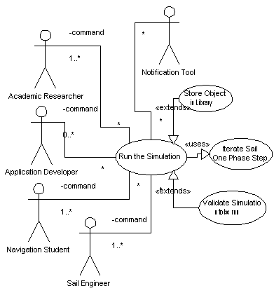

|
|
SailAway Project |
| Diagram |  |
|---|---|
| Name | Run Simulated Flight |
| Iteration | Finished |
| Summary | At the request of the user, the system will run the well formed simulation named by the user. The system will first check to see that the named simulation is well formed and then run it to completion without further input from the user. Information marked in the simulation as data to be saved for later delivery by the Notification Tool will be saved and marked as such. |
| Basic Course of Events |
|
| Alternative Paths |
|
| Exception Paths |
If a simulation named by the user is not well formed when the user requests
that it be run, the system will deliver useful error messages to the user
that explains why the simulation is not well formed. The system will then
provide for a mechanism to allow the user to make alterations to the
simulation for potential resubmission.
If the simulation violates any of the entries on the Flight Assumptions List at the end of any command, the simulation is stopped as though it had reached the end of the command list. The identity of the violated Flight Assumption is delivered to the User through the Notification Tool along with the Command that broke it. |
| Extension Points | . |
| Trigger | The user owning the simulation triggers this particular case from a User Interface. |
| Assumptions |
If the system is not configured for the use of a library, the local
environment must be large enough to permit the storage of the objects
generated by the simulation. These objects might be listed or they might
just be the default set.
If the system is configured for the use of a library, a connection must be available to the library for the storage of the objects generated by the simulation. |
| Preconditions |
A well formed simulation must exist before the system will proceed beyond
the first step. A well
formed simulation consists of the following required objects.
|
| Postconditions |
After a simulation is run, there may be a number of objects created to be
handed off to the Notification Tool for delivery to the user or elsewhere.
This object list may optionally include any of the following.
|
| Related Environment Rules | 1, 2 |
| Author | Dr Alfred W Differ |
| Date |
2001/11/09 - Facade 2001/11/22 - Filled 2002/02/07 - Focused 2002/02/15 - Finished |